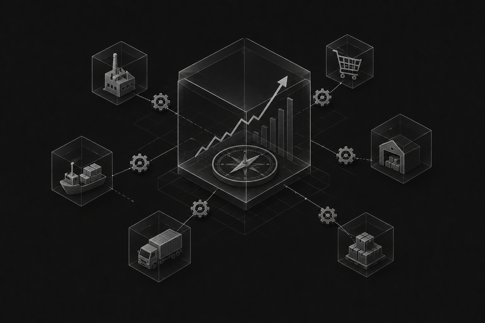
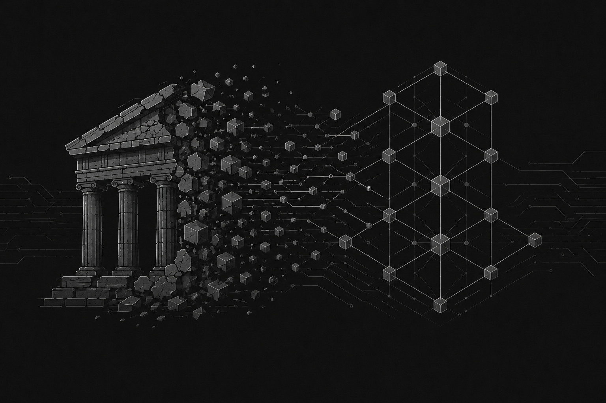
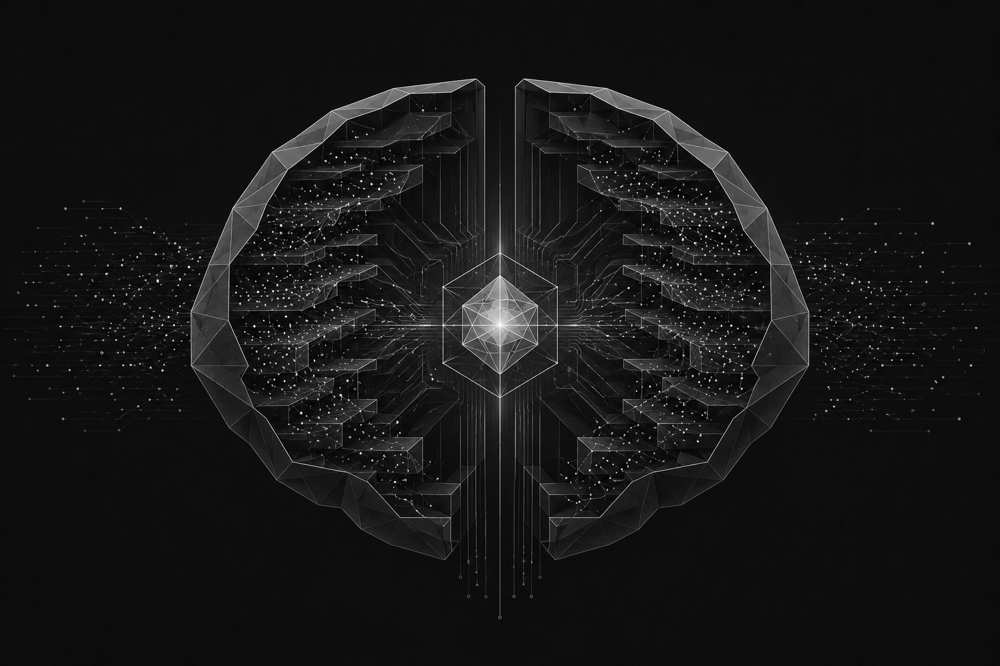
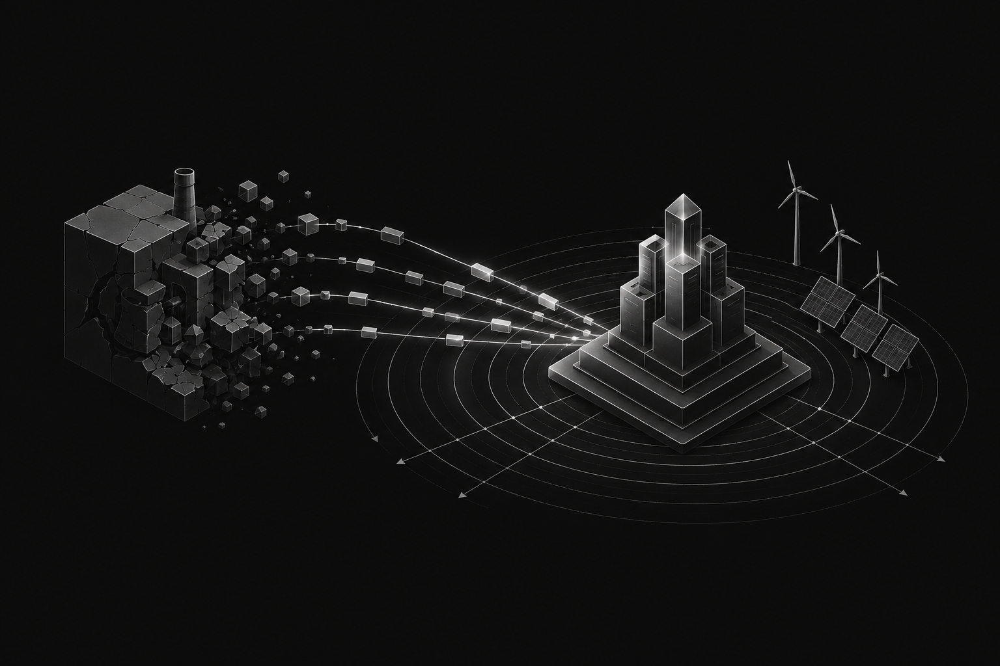

ZILOGIX decodes geopolitics, economics, technology and global transformations through deep research, powerful storytelling and cinematic content.
ZILOGIX is an intelligence-driven media platform focused on understanding the forces transforming our world. We study geopolitics, economics, technology, artificial intelligence, global industries and future transformations to help curious minds understand the systems behind everyday events.
We collect, analyze and organize the world's most valuable information and present it in a precise, simple and engaging way.
Our goal is simple. Turn complexity into clarity.




Abdul Tanzil Shaik
Behind ZILOGIX is a small team passionate about learning, researching and creating meaningful work.
We are not defined by titles or expertise. We are defined by curiosity, discipline and the commitment to improve every day.
The world is changing faster than ever.
Countries are transforming. Industries are shifting. Technology is redefining humanity.
Yet most people only see the headlines. They rarely understand the systems that create them.
ZILOGIX exists to change that.
We believe understanding should be accessible, engaging and deeply researched.
Every video, every article, every project we create is designed to help people think more clearly about the world around them.
Our mission is not only to create content.
Our mission is to change the way people think, analyze and see the world.
Explore cinematic documentaries and deep research covering geopolitics, economics, technology, artificial intelligence and the future of our world. Every video is designed to help you think deeper, connect ideas and understand the systems shaping tomorrow.
Every topic begins with extensive research from reliable sources before becoming a story.
We don't simply explain events. We explain how politics, economics, technology and business influence one another.
Premium visuals, smooth animation and compelling narratives make complex subjects easier to understand.
We create content that encourages deeper thinking, long-term learning and a broader perspective on the future.
Whether you're a learner, creator or organization, we'd love to hear from you.